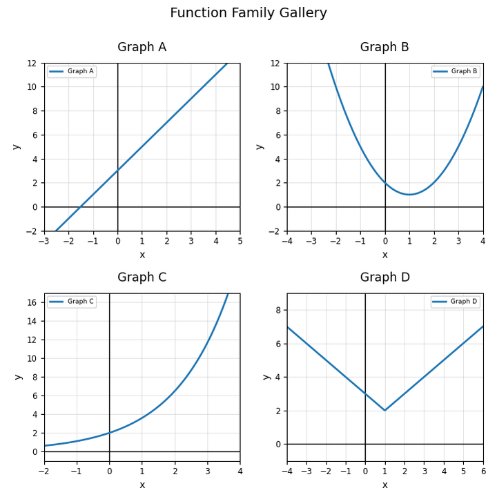
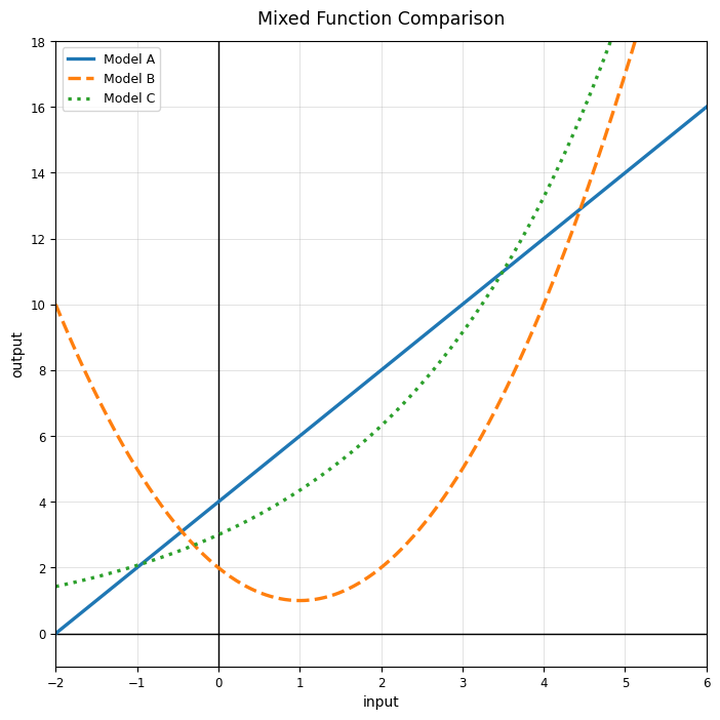

Use the gallery. Identify one linear, one quadratic, one exponential, and one absolute value graph.

Name three representations that can support a model-choice decision.
Choose a likely model family for the table and justify with numerical evidence.
| $x$ | 0 | 1 | 2 | 3 | 4 |
|---|---|---|---|---|---|
| $y$ | 5 | 10 | 20 | 40 | 80 |
Use the mixed function comparison graph. Identify one model that appears to grow fastest for larger inputs.

A student says, “The best model is always the one that is easiest to calculate.” Critique this claim.
Explain how a table could support a conclusion that a graph alone might make hard to justify.
Use the data set to choose a model family, make a prediction for $x=5$, and state one limitation.
| $x$ | 0 | 1 | 2 | 3 | 4 |
|---|---|---|---|---|---|
| $y$ | 12 | 15 | 20 | 27 | 36 |
Describe how features, parameters, and context work together when choosing a function model.